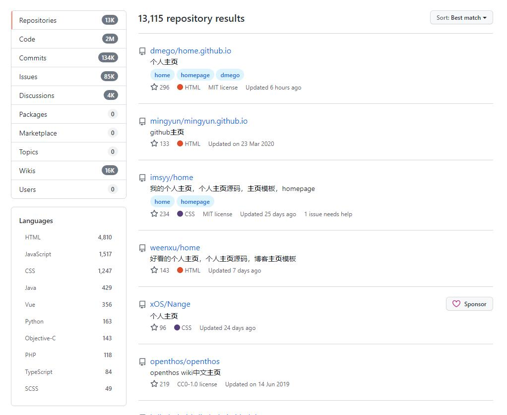
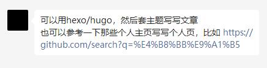

文章标题
第一段标题
正文文字内容
段内换行第一行
段内换行第二行
using System;
namespace HelloWorldApplication
{
/* 类名为 HelloWorld */
class HelloWorld
{
/* main函数 */
static void Main(string[] args)
{
/* 我的第一个 C# 程序 */
Console.WriteLine("Hello World!");
Console.ReadKey();
}
}
}正文中插入文字超链接示例。
第二段标题

图片描述示例


被缩放过的像素图
添加划掉的文字的示例
添加被黑幕盖住的文字的示例
正文内容中间可以插入补充文字
还好作为一条懒狗，以现在的一切对我来说都完全够用了，而且实现的效果我还挺满意的。